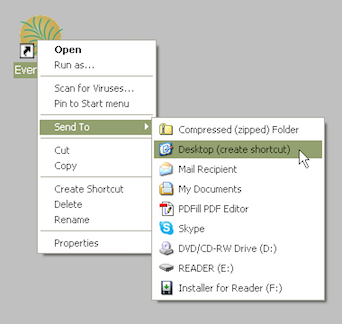
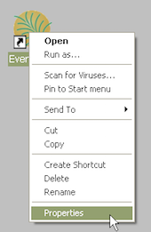
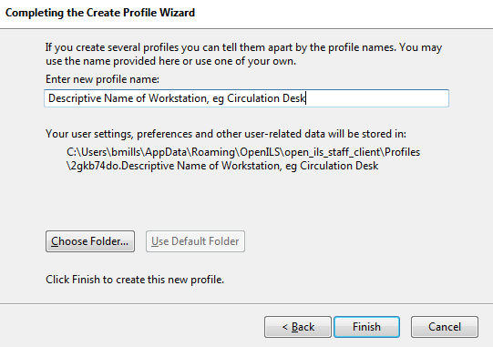
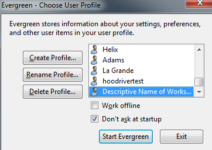
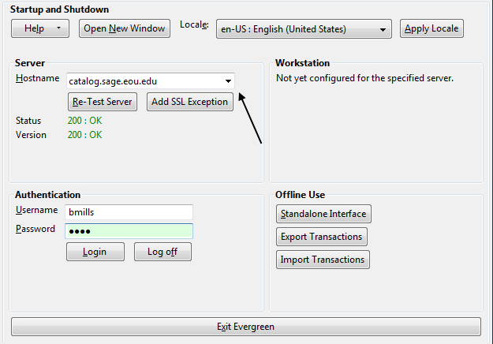
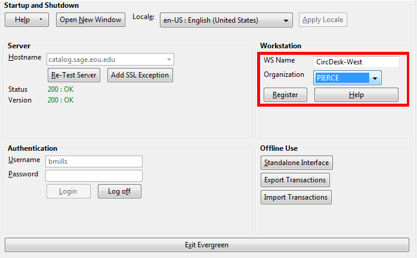
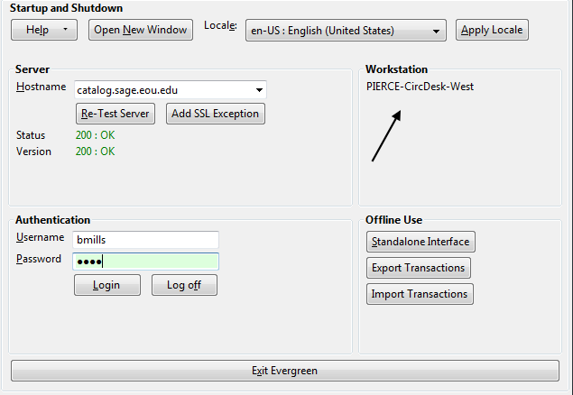

Getting Started
Logging in to Evergreen
- Select the Locale to match your language preference.
- Enter the Hostname of the Evergreen server you are connecting.
- Main
catalog.sage.eou.edu - Test
sage.eou.edu
- Main
- Click Test Server to ensure that you are able to reach the server. You should see
200 : OKindicated in green for Status and Version.
If Status indicates There was an error testing this server, check for a typo in the Hostname field. The hostname should read: catalog.sage.eou.edu.
If Version indicates 404 Not Found, the server does not support the version
of your staff client. You will need to download the correct version of Evergreen (currently 2.5.1) from
- Enter your Username and Password and click Login.
- If this is the first time you login from the workstation, you will need to register your workstation.
Auto Login
To use auto login, you will need to modify the Evergreen shortcut on your desktop. There are three new commands which are necessary for automatic login:
- -ilsuser
- -ilspassword
- -ilshost
You will need all three to have your client successfully login. To enable automatic login we need to modify the Evergreen shortcut on your desktop. If your shortcut already has preset tab commands, then place the automatic login commands after those commands.
- First, if your workstation will have multiple logins (circ, cat, admin) you need to copy a shortcut for each. There are a couple of ways to do this.
- Right-mouse click and drag icon; upon release select Create Shortcut Here.

- Right-mouse click icon, select Send to, and select Desktop (create shortcut).

- Right-mouse click the new shortcut and select Properties.

Listed in the Target box you will see something like the following path surrounded by quotation marks: "C:\Program Files\Evergreen Staff Client Sage\evergreen.exe"
- Place your cursor after the ending quotation mark and enter a space after the last quotation mark.

- After the space enter the login code for username followed by a space and the username
ilsuser circuser
- Enter a space and then the login code for password followed by the password
ilspassword circpass
- Finally, enter the login code for host followed by a space and the host address (this is the exact address which shows up in the Server Hostname box when you manually login to the client.
ilshost catalog.sage.eou.edu
Logging Out
There are several ways to end your Evergreen staff client session:
- Click the Exit Evergreen button on the bottom of the login page.
- Click the x at the top left of the login window.
- Choose File -> Quit Program from the menu of the application window.
Clicking the x on the application window (not the login window) will not exit Evergreen, but only close the window. A new application window can be opened by clicking Open New Window from the login window.
Setting up a Workstation
Workstations are what Evergreen uses to determine which library your machine is pulling settings from. This is important for running reports, setting the self-check’s location, checking in items and assigning fines to patrons. If you are on circulation at PIERCE, both your login account and workstation should be set to PIERCE.
When first logging into Evergreen on a new staff client, you will be prompted to create a workstation:

Create a descriptive name for the workstation and continue on with “Start Evergreen”. Uncheck “Don’t ask at startup” if you have multiple workstations you’re configuring for a single machine:

Enter the server address catalog.sage.eou.edu and login with your account credentials:

Choose a workstation name for the machine and the library (organization) you want it connected to. Then click “Register”:

You are now set up to do work connected to that library. Check the workstation name to ensure you’re logged in as the right library:

- Configuring Receipt Templates
- Configuring Receipt Printers